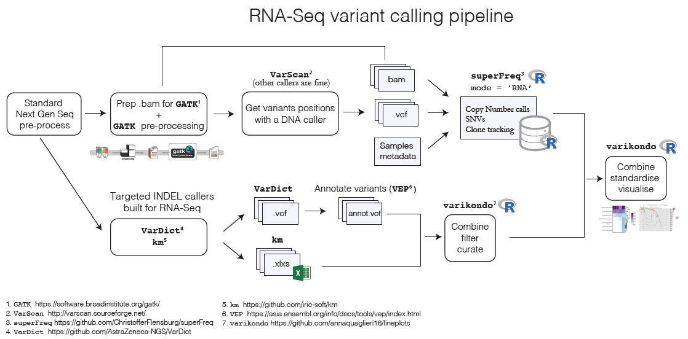

Bioinformatics can be very overwhelming at times, with all its different file formats, fields specifications and many ways of storing the same things! That’s how the varikondo package came to life. It was developed by the need to re-organise, standardise and combine the variant calling outputs from several callers. It has specific functions to interact with the output from superFreq (import_goi_superfreq()) as well as more generic import functions to integrate calls from various callers (import_any) or clinical information (import_clinical). It also provide a parsing function, parse_vcf_output() which takes a Variant Call Format (VCF) file as input and outputs a parsed data frame with standardised names for the VCF fields. Currently, parse_vcf_output() supports ouputs from the following callers run in tumour-only mode: GATK3 MuTect2, VarScan2, VarDict. It also enables parsing of the annotation field added by the Variant Effect Predictor. varikondo was developed with variants from RNA-Seq samples but there would be in principle no difference if variants were called using DNA-Seq. It was developed as part of the work done on an RNA-Seq cohort of Leukemia patients, of relatively small sample size (~30 patients), with multiple samples at different time points, sequenced across different batches and tissues. In these type of studies it is often the case that clinicians or biologists needs to explore the information for each patient, for a particular set of genes of interest. Time-series lineplots over time as well as heatmaps showing the shifts in variant allele frequency (VAF) and tumour content, help with exploring the various genetic results generated from sequencing data. A Shiny app, MuExplore, is also under development to allow interactive exploration of the standardised data created with varikondo.
Calling variants from RNA-Seq samples is increasing in popularity due to the large number of RNA-Seq data produced and benchmarking papers have been published comparing the performance of different callers (Quinn et al. 2013; Coudray et al. 2018; Lavallée et al. 2016). In the past year several new methods have been developed specifically to improve INDEL detection in RNA-Seq samples (Audemard et al. 2018; Kohei Hagiwara, Liang Ding, Michael N. Edmonson, Stephen V. Rice, Scott Newman, Soheil Meshinchi, Rhonda E. Ries, Michael Rusch, Jinghui Zhang 2019; Mose, Perou, and Parker 2019). As part of a project done on two Leukemia clinical trials we defined a pipeline to call variants in RNA-Seq (https://rna-mutation-calls.netlify.com/) and use superFreq to analyse clonal tracking and mutational development across the course of the treatment. We used combined calls from the VarDict (Lai et al. 2016) and km (Audemard et al. 2018) algorithms to define INDEL calls. Below is an overview of the variant calling pipeline and the steps where the varikondo package comes in!

After calling SNVs, CNVs and INDELs with different programs, it is often useful to combine all the results in a standardised way. Usually different programs output variants in different ways using slightly different conventions which makes it challenging to easily combine the results. For example, superFreq returns SNVs, CNVs and clone tracking in Rdata files as well as in csv files; VarDict uses the standard VCF output but with different specification of quality measures compared to, for example, MuTect2 or VarScan2; km outputs INDELs in tab delimited format. This makes it challenging to both create a comprehensive overview of the results for one sample as well as to compare results across callers. Another challenge comes from calling variants independently at different time points for the same patient. Variants might be present before treatment but absent after treatment and when a patient relapses or vice versa. This required to fill in the missing time points especially for visualisations purposes. While superFreq takes this problem into account by keeping any variants found at different time points, other programs like km or VarDict don’t allow that. varikondo takes care of these two problems for the output produced by the callers used in the pipeline.
Audemard, Eric Olivier, Patrick Gendron, Vincent-Philippe Lavallée, Josée Hébert, Guy Sauvageau, and Sébastien Lemieux. 2018. “Targeted Variant Detection in Leukemia Using Unaligned RNA-Seq Reads.” bioRXiv, April.
Coudray, A, A M Battenhouse, P Bucher, and V R Iyer. 2018. “Detection and Benchmarking of Somatic Mutations in Cancer Genomes Using RNA-seq Data.” bioRxiv. biorxiv.org.
Kohei Hagiwara, Liang Ding, Michael N. Edmonson, Stephen V. Rice, Scott Newman, Soheil Meshinchi, Rhonda E. Ries, Michael Rusch, Jinghui Zhang. 2019. “RNAIndel: A Machine-Learning Framework for Discovery of Somatic Coding Indels Using Tumor RNA-Seq Data.” biorXiv, January.
Lai, Zhongwu, Aleksandra Markovets, Miika Ahdesmaki, Brad Chapman, Oliver Hofmann, Robert McEwen, Justin Johnson, Brian Dougherty, J Carl Barrett, and Jonathan R Dry. 2016. “VarDict: A Novel and Versatile Variant Caller for Next-Generation Sequencing in Cancer Research.” Nucleic Acids Res. 44 (11): e108.
Lavallée, Vincent-Philippe, Sébastien Lemieux, Geneviève Boucher, Patrick Gendron, Isabel Boivin, Richard Neil Armstrong, Guy Sauvageau, and Josée Hébert. 2016. “RNA-sequencing Analysis of Core Binding Factor AML Identifies Recurrent Zbtb7a Mutations and Defines Runx1-Cbfa2t3 Fusion Signature.” Blood, March.
Mose, Lisle E, Charles M Perou, and Joel S Parker. 2019. “Improved Indel Detection in DNA and RNA via Realignment with Abra2.” Bioinformatics, January.
Quinn, Emma M, Paul Cormican, Elaine M Kenny, Matthew Hill, Richard Anney, Michael Gill, Aiden P Corvin, and Derek W Morris. 2013. “Development of Strategies for SNP Detection in RNA-seq Data: Application to Lymphoblastoid Cell Lines and Evaluation Using 1000 Genomes Data.” PLoS One 8 (3): e58815.